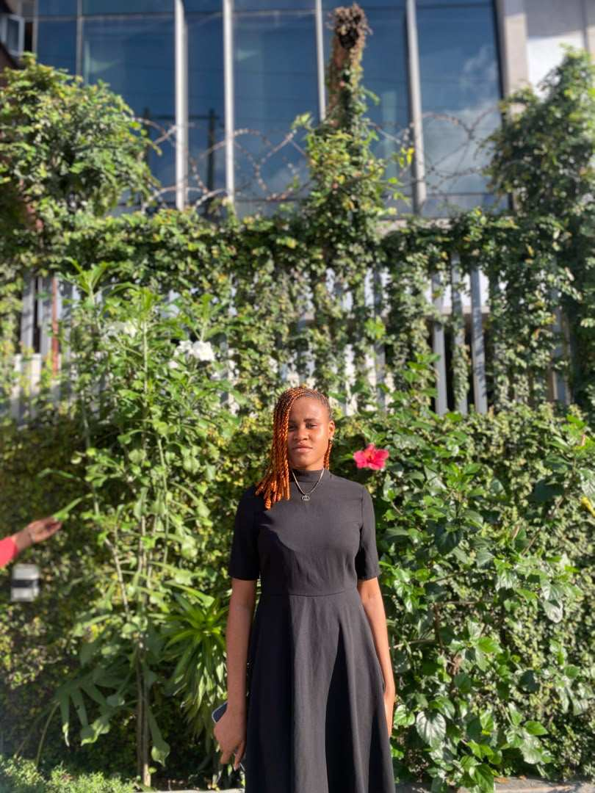

Favour Samuel Nya | WDD 130

My name is Favour Samuel Nya a student of Software development in
BYU-Pathway. I love writing programs to create
games and make my day to day life easier. I read a lot of books and
watch movies too. I go to church on Sundays and I have
family prayers every sunday too. I love myself and I love my family and
friends.